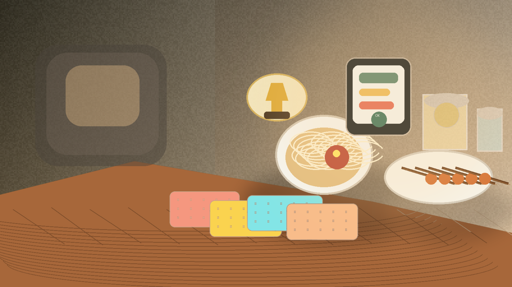

Table & Apron
23 Jalan SS 20/11, Damansara Kim, Petaling Jaya
Neighbourhood comfort food with official reservations, GrabFood delivery, and a waitlist when fully booked.
Tue-Thu dinner only; Fri-Sun lunch and dinner; max 12 pax.

Damansara / Petaling Jaya dining board
12 spots restaurants worth comparing
6 GrabFood links direct delivery pages for quick orders
3 booking systems UMAI, Hilton dining, direct site
Restaurants
23 Jalan SS 20/11, Damansara Kim, Petaling Jaya
Neighbourhood comfort food with official reservations, GrabFood delivery, and a waitlist when fully booked.
Tue-Thu dinner only; Fri-Sun lunch and dinner; max 12 pax.
5 Jalan SS 20/11, Damansara Kim, Petaling Jaya
Thai fusion in Damansara Kim, with live reservations on UMAI.
Reservations recommended on weekends.
B-G, 31 Jalan PJU 1a/3j, Ara Damansara, Petaling Jaya
Busy Thai street-food spot with reservations, GrabFood delivery, and a lively Ara Damansara address.
Good pick for group dinners and long menus.
B-GF-07 Sunway Nexis, Jalan PJU 5/1, Kota Damansara, Petaling Jaya
Kelantanese comfort food with UMAI reservations and a family-friendly dining room.
Tue-Sun, 11am-10pm on the official page.
Lot G-03, G-03A & G-05, Citta Mall, Ara Damansara
Japanese hotpot at Citta Mall with live reservations on UMAI.
Use the reservation page for current slot availability.
No 2 Jalan Barat, Hilton Petaling Jaya
Authentic Japanese dining inside Hilton Petaling Jaya with the hotel's official dining page.
Book a table from the official Hilton dining page.
No 2 Jalan Barat, Hilton Petaling Jaya
Local and global buffet dining with reservations from Hilton's official dining page.
Good for group lunches and family dinners.
No 2 Jalan Barat, Hilton Petaling Jaya
Modern Cantonese dining with a booking path from Hilton PJ's dining page.
Weekday dim sum lunch and weekend family meals.
Damansara Kim, Petaling Jaya
Arabian dishes and pasta with a delivery-first setup on GrabFood.
Great for easy delivery nights and shared platters.
Bandar Baru Petaling Jaya
South Indian delivery with a current GrabFood search link and fast weekday lunches.
Delivery-only; check the app for active service zones.
Kelana Damansara Suites, Petaling Jaya
Malay comfort food with delivery-friendly portions and a GrabFood search page.
Good for rice dishes, sides, and sharing.
Ara Damansara
Sushi, sashimi, and bento in Ara Damansara with GrabFood delivery on demand.
Delivery-only; works well for lunch and dinner orders.
Live booking
Direct reservation page
Official page only
Open the official Hilton page in a new tab to check current slots for Genji, Paya Serai, or Toh Yuen.
Open official pageThe restaurant owns the seat inventory in this view.
Booking
Table & Apron, KomPassion, Jatujak, KANTAN, and SUKI-YA all use UMAI reservation pages.
Hilton Petaling Jaya routes diners through its official dining page for Genji, Paya Serai, and Toh Yuen.
If the venue owns the reservation page, link to that page and let their system handle the seats.
How to connect it
The safe path is simple: send people to the restaurant's official reservation page. If the venue wants availability shown inside your page, ask for their widget script or partner API access first. UMAI and direct reservation pages can be embedded; Hilton stays cleaner as an outbound page.
Add Review
Recent ratings